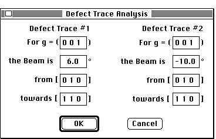

Desktop Manual
Desktop Manual
Stereographic Tutorial: Adding Spots/Tensile Axis/Defects:
If it is desired to work with a specific set of higher poles, it is possible
to view these poles without plotting the entire stereographic projection
to the same high index. Desktop Microscopist allows specific poles and classes
of poles to be plotted as needed. Going to the Function menu and selecting
the item. Add Spot; will result in the pole definition dialog box:

Add Spots Dialog
Select the desired index, in this case, the (456) pole, click the choice
of plane or direction and select the crystal, either Matrix, ppt. 1,ppt.2,
or ppt. 3 from the pop-up menu.
Checking the Add Type box will plot all the {456} poles of that index. To
plot these poles, click on the OK button or press <return>. The dialog
box will remain but the poles will be plotted. Since, the stereographic
projection only plots for the first crystal of each type, the poles are
plotted with respect to the first defined orientation relationship.
Additional sets of planes or direction poles may be added in this fashion.
When finished, clicking on Quit will provide a return to the main window.
Add Tensile Axis Dialog
I. It is possible to plot a pole with a specific angular relationship
with respect to some other pole. To do this go to the Function menu and
select the .i.Add Tensile Axis;... item. The Tensile Axis Dialog Box will
be displayed.. When this dialog box is open, poles may be added with either
the mouse or by typing in the angles of interest. m is vertical and l is
the horizontal axis.
To use the mouse, simply hold the mouse button down and move the cursor
to the desired position. This action will result in the angular position
being displayed in the dialog box. Clicking on OK will add the desired pole
and give the closest equivalent Miller direction index.

Trace Analysis Dialog Box
138. The stereogram will now orient to the second crystal orientation. Again,
set the dislocation line direction by rotating the great circle, this time
to 22 degrees clockwise. A new pole will appear at the crossover of the
two great circles. This is the true line direction of the dislocation. Go
to the Function menu and select Irrational Direction. By moving the cursor
over the newly plotted pole, the indices of the determined pole can be read.
Clicking on the newly defined pole while in the info function will also
provide this information. The answer should be approximately [-1 12 -1].
1. Due to the large number of available functions, it may be worthwhile
to spend a little more time exploring the capabilities of this portion of
the program. For now, go back to the definition dialog box, (found under
the Function Menu), click on Matrix and Ppt #1 set to 1 and 2 and re-plot
it. Finally, re-size the plot by using the grow box in the bottom right
corner to a small window and then go to Re-plot under the Function Menu.
The stereogram has now been re-sized to fit the size of the window.
Distributed
By: Virtual Labs
Last Updated:1/12/96 Sat, Apr 27, 1996